書く場所
ブラウザーのエディタ
インストールは要りません。スプレッドシートやドキュメントの「拡張機能」→「Apps Script」から、専用のエディタが開きます。
SCRIPT / DOCS / CALENDAR / WEB APP
スプレッドシート、ドキュメント、カレンダー。
いつものGoogleサービスを、少しのJavaScriptでつなぎます。
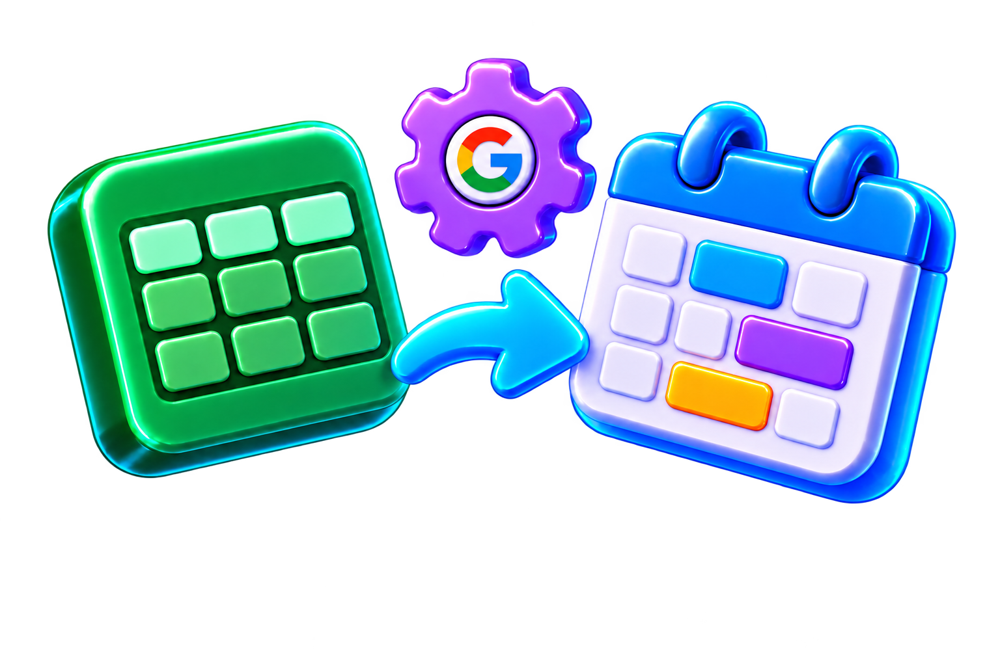
01 / GASとは
Google Apps Script（GAS、ガス）は、Googleのサービスを操作するためのプログラムを書いて動かすしくみです。書き方はJavaScriptと同じで、Googleアカウントがあれば、ブラウザーだけで始められます。
書く場所
インストールは要りません。スプレッドシートやドキュメントの「拡張機能」→「Apps Script」から、専用のエディタが開きます。
動く場所
書いたコードは自分のPCではなく、Googleのサーバーで動きます。PCを閉じていても、決まった時刻に動かすこともできます。
つなげる相手
スプレッドシート、ドキュメント、カレンダー、Gmail、ドライブなど。SpreadsheetApp や CalendarApp のような名前の道具で操作します。
このページで作るもの
02 / 2つの型
GASのプログラム（プロジェクト）には、置き方が2種類あります。どちらも書き方は同じで、違うのは「どこから作るか」と「親になるファイルがあるか」です。
CONTAINER-BOUND
スプレッドシートやドキュメントなど、1つのファイル（コンテナ）にくっついたスクリプトです。そのファイルを開き、「拡張機能」→「Apps Script」で作ります。
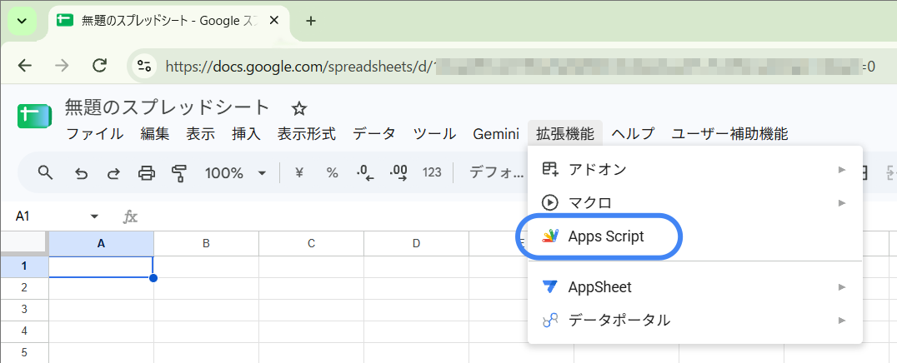
STANDALONE
どのファイルにもくっつかず、ドライブに単独で置くスクリプトです。script.google.com で新しいプロジェクトを作るか、ドライブの「新規」→「その他」→「Google Apps Script」で作ります。
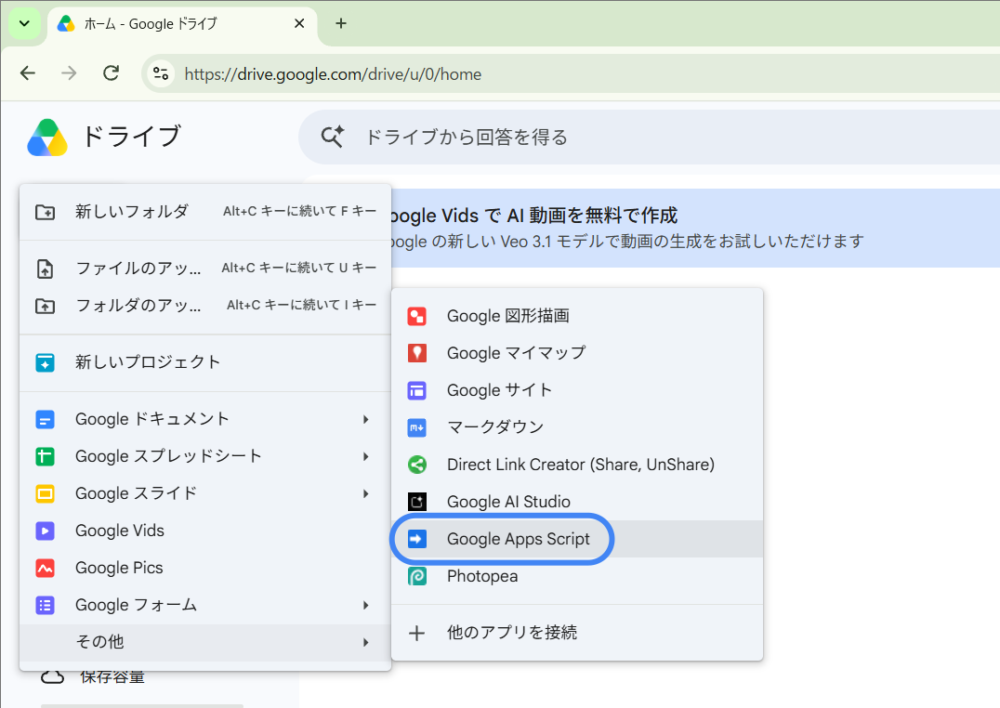
| くらべる点 | コンテナバインド型 | スタンドアロン型 |
|---|---|---|
| ドライブでの見え方 | ドライブには出てこない。親ファイルから開く | 1つのファイルとしてドライブに並ぶ |
| 親ファイルの操作 | getActiveSpreadsheet() などで、IDを書かずに親ファイルを扱える | 親がないので、openById() などでIDを指定して開く |
| メニュー・ダイアログ | getUi() で、親ファイルの画面にメニューやダイアログを足せる | ファイルの画面にメニューは足せない |
| ウェブアプリにする | できる | できる |
| 向いている用途 | 「このシート専用」「この文書専用」の便利機能 | 複数のファイルをまたぐ処理、ドライブの整理などの道具 |
覚えておくこと：コンテナバインド型は、あとから親ファイルと切り離せません。このページの作例は、すべてコンテナバインド型で作ります。
03 / 最初の実行と承認
GASが自分のドキュメントやカレンダーを操作するには、あなたの許可が必要です。初めて実行したとき（使う道具が増えたときも）に、承認を求める画面が続けて出ます。
実際のGoogle Apps Scriptで撮影しました（2026年10月24日）。個人情報は加工して隠しています。一部の画像では操作・確認する箇所を赤枠で示しています。画像を押すと大きく表示できます。
初めて関数を実行すると、この案内が出ます。「権限を確認」を押して、Googleの承認画面へ進みます。
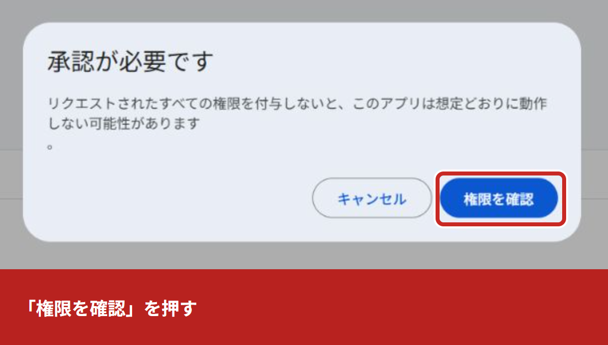
「このアプリは Google で確認されていません」と出ることがあります。自分で作り、内容を理解したスクリプトであることを確認して「詳細」を開きます。
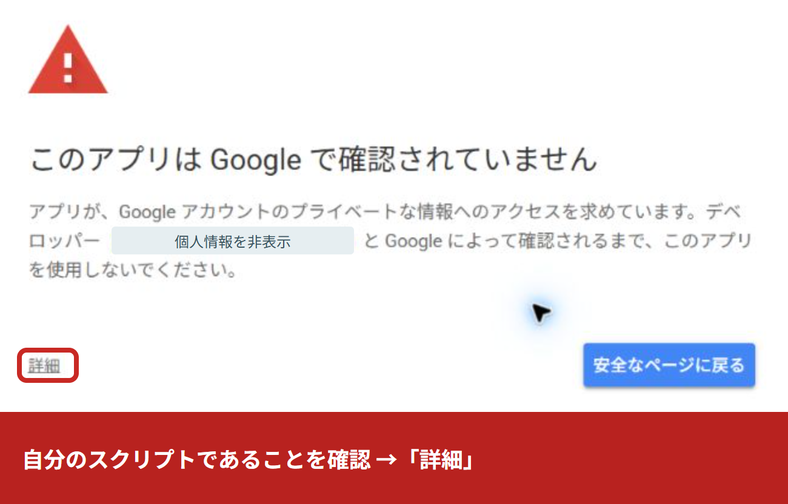
「詳細」を開くと、プロジェクトへの移動リンクが現れます。名前と内容を確認し、信頼できる自分のスクリプトの場合だけ進みます。
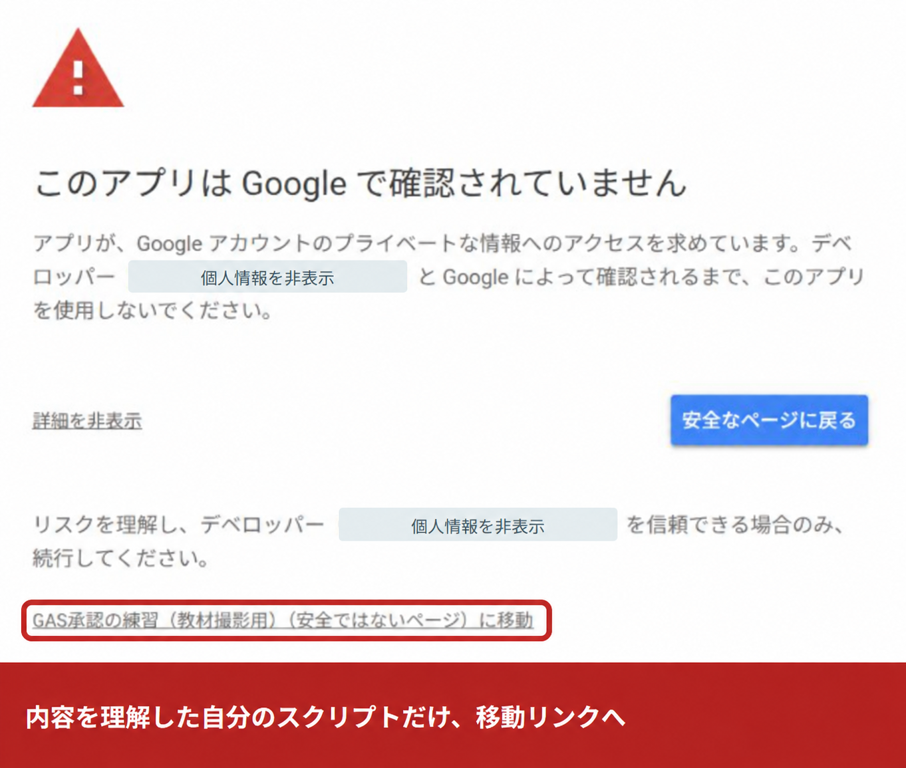
アプリ名と、何を見たり変えたりできるようになるかを読みます。必要な権限だと納得した場合だけ、画面の案内に沿って承認します。表示される権限やボタン名は、コードやアカウントによって変わります。
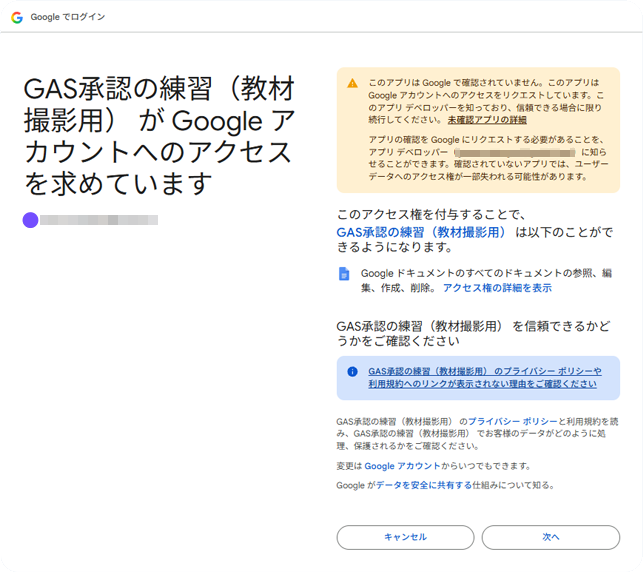
安全メモ：警告を進めてよいのは、自分で書いた、または中身を理解したスクリプトだけです。人から渡されたスクリプトや、知らない人のファイルに入っていたスクリプトは、権限の一覧を見て、むやみに許可しないでください。
途中でアカウント選択画面が表示された場合は、使用するGoogleアカウントを選びます。今回の撮影ではこの選択は省略されました。画面の文言や順番は、Googleの画面の更新で変わることがあります。練習画面では、この流れを簡略化して再現しています。
04 / ドキュメント × 入力フォーム
案内文やお礼状の書式はドキュメントで作り、変わる部分だけを {名前}・{日付}・{内容} にしておきます。メニューから右側の入力パネルを開き、入力した値を文書に差し込みます。
{名前}様
{日付}
{内容}
以下は実際のGoogleドキュメントで、掲載コードを使って操作・撮影した画面です（2026年10月24日）。画像を押すと大きく表示できます。日付はフォームでは「2026/10/24」、文書では「2026-10-24」と表示されます。
様 は目印の外に書きます。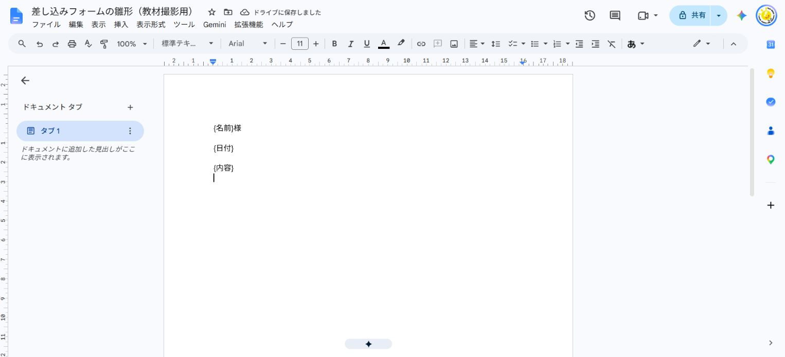
Code.gs に下のコードを貼ります。左の「＋」→「HTML」で名前を Sidebar にして、もう一方のコードを貼ります。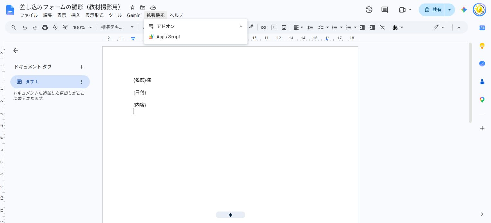
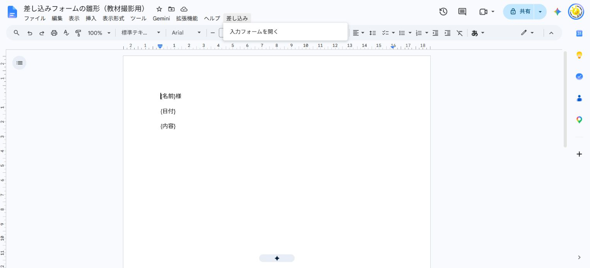
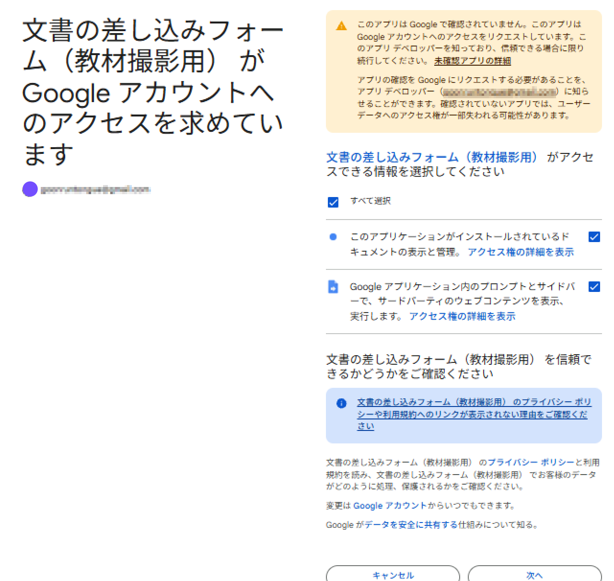
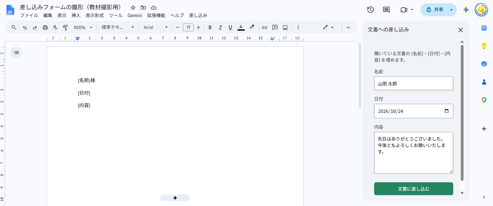
{名前}様 は「山田 太郎様」に変わります。この例にウェブアプリのデプロイは必要ありません。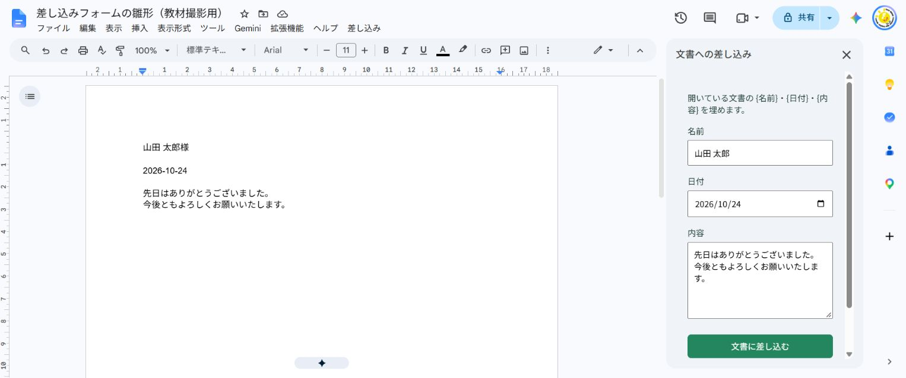
/** @OnlyCurrentDoc */
function onOpen() {
DocumentApp.getUi().createMenu('差し込み')
.addItem('入力フォームを開く', 'showSidebar').addToUi();
}
function showSidebar() {
DocumentApp.getUi().showSidebar(
HtmlService.createHtmlOutputFromFile('Sidebar').setTitle('文書への差し込み'));
}
function fillTemplate(data) {
const values = {'名前': String(data.name || '').trim(), '日付': String(data.date || '').trim(), '内容': String(data.content || '').trim()};
if (Object.values(values).some(value => !value)) throw new Error('すべての欄を入力してください。');
const lock = LockService.getDocumentLock();
lock.waitLock(10000);
try {
const body = DocumentApp.getActiveDocument().getActiveTab().asDocumentTab().getBody();
const changes = [], found = new Set();
const pattern = '\\{(名前|日付|内容)\\}';
let match = body.findText(pattern);
while (match) {
const text = match.getElement().asText();
const start = match.getStartOffset(), end = match.getEndOffsetInclusive();
const key = text.getText().slice(start + 1, end);
changes.push({text, start, end, value: values[key]});
found.add(key);
match = body.findText(pattern, match);
}
if (found.size !== 3) throw new Error('本文に {名前}・{日付}・{内容} をそろえてください。差し込み済みなら元の雛形をコピーし直します。');
changes.reverse().forEach(c => {
c.text.insertText(c.start, c.value);
c.text.deleteText(c.start + c.value.length, c.end + c.value.length);
});
return '差し込みました。文書を確認してください。';
} finally { lock.releaseLock(); }
}
<!DOCTYPE html>
<html lang="ja"><head><base target="_top"><meta charset="utf-8">
<style>
body{font:14px sans-serif;padding:12px;color:#203c32}label{display:block;margin:16px 0}input,textarea,button{box-sizing:border-box;width:100%;padding:10px;margin-top:6px;font:inherit}textarea{min-height:130px}button{background:#23865e;color:white;border:0;border-radius:6px}button:disabled{opacity:.6}#status{white-space:pre-wrap}
</style></head><body>
<p>開いている文書の {名前}・{日付}・{内容} を埋めます。</p>
<form id="form">
<label>名前<input name="name" required></label>
<label>日付<input name="date" type="date" required></label>
<label>内容<textarea name="content" required></textarea></label>
<button id="submit" type="submit">文書に差し込む</button>
</form><p id="status" role="status"></p>
<script>
const form = document.getElementById('form');
const button = document.getElementById('submit');
const status = document.getElementById('status');
form.addEventListener('submit', event => {
event.preventDefault();
if (!form.reportValidity()) return;
button.disabled = true;
status.textContent = '差し込んでいます…';
google.script.run.withSuccessHandler(message => {
status.textContent = message; button.disabled = false;
}).withFailureHandler(error => {
status.textContent = error.message; button.disabled = false;
}).fillTemplate(Object.fromEntries(new FormData(form)));
});
</script></body></html>
onOpen() / showSidebar()google.script.runfillTemplate() に渡します。処理は非同期なので、成功・失敗の通知をそれぞれ受け取ります。使うたびに雛形をコピー：差し込むと目印は入力値に変わります。別の文書を作るときは元の雛形からコピーしてください。この例は現在開いているタブの本文（表の中も含む）が対象です。ヘッダー・フッター・他のタブは対象にしていません。各目印は途中で改行せず、ひと続きの文字として書きます。
05 / カレンダー ⇄ スプレッドシート
スプレッドシートのメニューから、カレンダーの予定を一覧にしたり、シートに書いた予定をまとめてカレンダーに登録したりします。
CalendarApp.getAllCalendars() で、自分が見られるカレンダーの名前とIDをシートに並べます。使うカレンダーのIDを、ここで確かめます。
getEvents(開始, 終了) で期間内の予定を取り出し、タイトル・日時・場所をシートに書き込みます。
シートの行を読み、createEvent() で指定したカレンダーに予定を作ります。作った予定のIDをシートに書き戻します。
// カレンダー → スプレッドシート（今日から30日分）
function importEvents() {
const calendar = CalendarApp.getCalendarById(IMPORT_CALENDAR_ID);
const start = new Date();
start.setHours(0, 0, 0, 0);
const end = new Date(start);
end.setDate(end.getDate() + 30);
const rows = calendar.getEvents(start, end).map((ev) => [
ev.getTitle(), ev.getStartTime(), ev.getEndTime(), ev.getLocation(),
]);
const sheet = SpreadsheetApp.getActiveSpreadsheet().getSheetByName('読み込み');
sheet.clearContents();
sheet.appendRow(['タイトル', '開始', '終了', '場所']);
if (rows.length) sheet.getRange(2, 1, rows.length, 4).setValues(rows);
}
// スプレッドシート → カレンダー
function exportEvents() {
const calendar = CalendarApp.getCalendarById(EXPORT_CALENDAR_ID);
const sheet = SpreadsheetApp.getActiveSpreadsheet().getSheetByName('書き出し');
const values = sheet.getDataRange().getValues(); // 1行目は見出し
for (let i = 1; i < values.length; i++) {
const [title, start, end, location, eventId] = values[i];
if (!title || eventId) continue; // 書き出し済みの行は飛ばす
const ev = calendar.createEvent(title, start, end, { location: location });
sheet.getRange(i + 1, 5).setValue(ev.getId());
}
}書き出しを2回押すと、同じ予定が二重に登録されてしまいます。作った予定のIDを「予定ID」の列に書き戻し、IDが入っている行は飛ばすようにしています。
エディタ左の「トリガー」から時間主導型のトリガーを足すと、「毎朝7時に読み込む」のように自動で動かせます。1日に作れる予定の数など、使える量には上限があります。
06 / GASでWeb APIを作る
GASのプロジェクトは、ウェブアプリとして公開できます。URLにアクセスがあると決まった関数が動き、シートのデータをJSONで返したり、送られてきたデータをシートに書き込んだりできます。APIそのものの考え方は、APIのしくみを体験しようで紹介しています。
GETで呼ばれたら
doGet(e)ブラウザーでURLを開いたときや、fetch(URL) で呼ばれたときに動きます。URLの ?id=3 のような値は e.parameter に入ります。
POSTで呼ばれたら
doPost(e)フォームなどからデータを送られたときに動きます。送られてきた本文は e.postData.contents に文字列で入ります。
返すもの
ContentServicecreateTextOutput(JSON.stringify(データ)) に setMimeType(ContentService.MimeType.JSON) を付けて、JSONとして返します。
/exec で終わるURLが表示される| 設定 | 選べるもの | 意味 |
|---|---|---|
| 次のユーザーとして実行 | 自分 | 誰がアクセスしても、デプロイした自分の権限で動く。シートを読み書きするのは自分のアカウント |
| アクセスしているユーザー | アクセスした人の権限で動く。その人にも承認の画面が出る | |
| アクセスできるユーザー | 自分のみ | デプロイした本人だけが使える |
| Googleアカウントを持つ全員 | Googleにログインしている人なら使える | |
| 全員 | ログインしていない人も含めて、URLを知っていれば誰でも使える |
ウェブアプリでは「アクティブなファイル」がない：公式資料では、ウェブアプリとして動くときは getActiveSpreadsheet() などが使えないとされています。作例では、スプレッドシートのID（URLの /d/ と /edit のあいだの文字列）を書き、SpreadsheetApp.openById() で開きます。
07 / 作例A ― 読むだけ（GET）
スプレッドシートに書いたお知らせのうち、「公開」にチェックを入れたものだけを、Webページに一覧表示します。お知らせを直したいときは、シートを書き換えるだけです。
| A 日付 | B タイトル | C 本文 | D 公開 | |
|---|---|---|---|---|
| 2 | 2026/10/14 | 秋の勉強会のお知らせ | 10月25日に開きます。 | ✓ |
| 3 | 2026/10/16 | 資料を公開しました | 第3回のスライドです。 | ✓ |
| 4 | 2026/10/17 | （下書き）次回の日程 | 調整中 |
const SPREADSHEET_ID = 'ここにスプレッドシートのIDを入れる';
function doGet() {
const sheet = SpreadsheetApp.openById(SPREADSHEET_ID)
.getSheetByName('お知らせ');
const rows = sheet.getDataRange().getValues().slice(1);
const items = rows
.filter((row) => row[3] === true) // 公開にチェック
.map((row) => ({
date: Utilities.formatDate(new Date(row[0]), 'Asia/Tokyo', 'yyyy-MM-dd'),
title: String(row[1]),
body: String(row[2]),
}));
return ContentService
.createTextOutput(JSON.stringify({ items: items }))
.setMimeType(ContentService.MimeType.JSON);
}// デプロイで表示された /exec で終わるURL
const API_URL = 'https://script.google.com/macros/s/…/exec';
async function load() {
const res = await fetch(API_URL);
const data = await res.json();
data.items.forEach((item) => {
const li = document.createElement('li');
li.textContent = item.date + ' ' + item.title;
document.getElementById('list').append(li);
});
}
load();GASが返すJSON
{
"items": [
{ "date": "2026-10-14", "title": "秋の勉強会のお知らせ", "body": "10月25日に開きます。" },
{ "date": "2026-10-16", "title": "資料を公開しました", "body": "第3回のスライドです。" }
]
}画面に出る一覧
チェックを入れていない「（下書き）次回の日程」は、JSONに入りません。見せたくないデータは、GASの側で外してから返します。
08 / 作例B ― 書き込む（POST）
HTMLのフォームで名前と出欠を送ると、GASが受け取って「出欠」シートの最後の行に書き足します。集計はスプレッドシートでそのまま行えます。
function doPost(e) {
const data = JSON.parse(e.postData.contents);
// 受け取った値は、そのまま信じずに確かめる
const name = clean(data.name, 40);
const answer = ['出席', '欠席', '未定'].includes(data.answer) ? data.answer : '';
if (!name || !answer) {
return json({ ok: false, message: '名前と出欠を入れてください。' });
}
SpreadsheetApp.openById(SPREADSHEET_ID).getSheetByName('出欠')
.appendRow([new Date(), name, answer, clean(data.comment, 200)]);
return json({ ok: true, message: '受け付けました。' });
}
// = + - @ で始まる値は、数式にならないよう ' を付ける
function clean(value, max) {
const text = String(value || '').trim().slice(0, max);
return /^[=+\-@]/.test(text) ? "'" + text : text;
}
function json(obj) {
return ContentService.createTextOutput(JSON.stringify(obj))
.setMimeType(ContentService.MimeType.JSON);
}const res = await fetch(API_URL, {
method: 'POST',
// Content-Type は付けない（text/plain で送られる）
body: JSON.stringify({ name, answer, comment }),
});
const data = await res.json();
result.textContent = data.message;出欠フォーム
名前山田 花子
出席欠席未定
送信する
山田 花子 さんの「出席」を受け付けました。
application/json を付けると、ブラウザーは本番の前に「送ってよいか」を確かめるリクエスト（プリフライト）を送ります。GASのウェブアプリが受け付けるのは doGet と doPost だけなので、この確認に応えられません。text/plain のままなら確認は送られず、本文のJSONは JSON.parse で読めます。
「全員」に公開したURLは、画面を通さなくても呼べます。長さや選択肢をGASの側で確かめ、数式として扱われる値を防いでいます。大事な用途では、Googleフォームなどの専用のしくみも検討してください。
09 / 公開するときの注意
「全員」に公開すると、URLを知っている人は誰でもAPIを呼べます。名前やメールアドレスなどの個人情報は、返すデータに入れないでください。
公開中のURLは、デプロイしたときのバージョンで動きます。コードを直したら「デプロイ」→「デプロイを管理」→ 編集で新しいバージョンを選ぶと、同じURLのまま更新できます。
無料のGoogleアカウントでは、1回の実行は6分まで、カレンダーの予定作成は1日5,000件まで、などの上限があります。上限は変わることがあるので、公式資料で確かめてください。
「デプロイをテスト」の /dev で終わるURLは、編集できる人だけが開け、保存した最新のコードで動きます。人に渡すのは /exec のURLです。
10 / サンプル
ドキュメントの差し込みフォーム（Code.gs・Sidebar.html）、カレンダー連携、作例A・Bの Code.gs と index.html が入っています。準備と使い方は同梱の README.txt で確認できます。index.html は、API_URL に自分のウェブアプリのURLを入れてから開きます。
公式資料を確認：2026年10月18日
承認画面の撮影・確認：2026年10月24日。Google Apps Script：Googleサービスの承認。このページの実画面は教材撮影用プロジェクトで取得し、個人情報のマスクと赤枠を追加しています。
差し込みフォームの確認：2026年10月24日。公式：ダイアログとサイドバー ／ HTMLとGASの通信 ／ 本文の文字検索
メニューやボタンの日本語の表記は、公式資料の英語の表記をもとにした訳で、実際の画面と違うことがあります。ページ内の日付、名前、お知らせ、URLは説明用の例です。